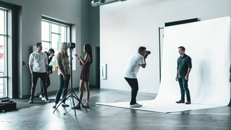

Photography
Creative design professionals combine artistic abilities with technical knowledge to create designs used in print and electronic media. Students create, maintain and present a professional portfolio showcasing their finest work. Graduates of the Design and Graphic Technology program are positioned for a variety of careers including graphic designer, advertising specialist, digital print technician, publication designer, public relations professional, pre-press technician and web graphic designer.
